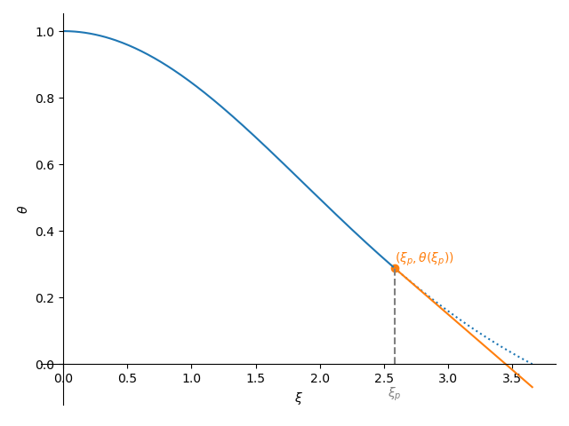

Lane-Emden polytrope equation#
Derivation#
We consider just the equations of hydrostatic equilibrium and mass continuity from our equations of stellar structure.
We can close the system via an equation of state of the form: \(P(\rho)\), which we write as:
where \(n\) is called the polytropic index.
With a bit of algebra, we can combine these equations into a single second-order ODE for density:
and then make it dimensionless, but expressing the density in terms of the central density, \(\rho_c\):
where we note that \(0 \le \theta \le 1\), and a lenghtscale \(\alpha\) such that \(r = \alpha \xi\):
Giving
The boundary conditions are:
\(\theta(\xi=0) = 1\)
\(d\theta / d\xi |_{\xi=0} = 0\) (\(g = 0\) at the center, so \(dP/dr = d\rho/dr = 0\))
System of first order equations#
We will rewrite this as 2 first order equations, taking \(y = \theta\), \(z = \theta^\prime\):
Then we have:
\(y(0) = 1\)
\(z(0) = 0\)
Notice that if we evaluate the system at \(\xi = 0\), then the \(dz/d\xi\) term blows up. We need to use an expansion there.
In the limit \(\xi \rightarrow 0\), the solution takes the form:
which allows us to simply the \(dz/d\xi\) near \(\xi = 0\) as:
Stopping point#
But we have the problem that we do not know the stopping point, \(\xi_1\).
We estimate the radius, \(\xi_1\) each step and make sure that the next step does not take us past that estimate. This prevents us from having negative \(\theta\) values. Given a point \((\xi_p, \theta(\xi_p))\), and the derivative at that point, \(\theta^\prime_p = d\theta/d\xi |_{\xi_p}\), we can write the equation of a line as:

Then we can ask when does \(\theta\) become zero, finding:
or in terms of \(y\) and \(z\),
This is our estimate of \(\xi_1\). We then make sure our stepsize \(h\) is small enough that we do not go beyond this estimate.
Implementation#
This is our main class that does the integration. We initialize it with the polytopic index, and then it will integrate the system for us. We can then plot it or get the parameters \(\xi_1\) and \(-\xi_1^2 d\theta/d\xi |_{\xi_1}\)
import matplotlib.pyplot as plt
import numpy as np
class Polytrope:
"""a polytrope of index n"""
def __init__(self, n, h0=1.e-2, tol=1.e-12):
self.n = n
self.xi = []
self.theta = []
self.dtheta_dxi = []
self._integrate(h0, tol)
def _integrate(self, h0, tol):
"""integrate the Lane-Emden system"""
# our solution vector q = (y, z)
q = np.zeros(2, dtype=np.float64)
xi = 0.0
h = h0
# initial conditions
q[0] = 1.0
q[1] = 0.0
while h > tol:
# 4th order RK integration -- first find the slopes
k1 = self._rhs(xi, q)
k2 = self._rhs(xi+0.5*h, q+0.5*h*k1)
k3 = self._rhs(xi+0.5*h, q+0.5*h*k2)
k4 = self._rhs(xi+h, q+h*k3)
# now update the solution to the new xi
q += (h/6.0)*(k1 + 2*k2 + 2*k3 + k4)
xi += h
# set the new stepsize--our systems is always convex
# (theta'' < 0), so the intersection of theta' with the
# x-axis will always be a conservative estimate of the
# radius of the star. Make sure that the stepsize does
# not take us past that.
R_est = xi - q[0]/q[1]
if xi + h > R_est:
h = -q[0]/q[1]
# store the solution:
self.xi.append(xi)
self.theta.append(q[0])
self.dtheta_dxi.append(q[1])
self.xi = np.array(self.xi)
self.theta = np.array(self.theta)
self.dtheta_dxi = np.array(self.dtheta_dxi)
def _rhs(self, xi, q):
""" the righthand side of the LE system, q' = f"""
f = np.zeros_like(q)
# y' = z
f[0] = q[1]
# for z', we need to use the expansion if we are at xi = 0,
# to avoid dividing by 0
if xi == 0.0:
f[1] = (2.0/3.0) - q[0]**self.n
else:
f[1] = -2.0*q[1]/xi - q[0]**self.n
return f
def get_params(self):
""" return the standard polytrope parameters xi_1,
and [-xi**2 theta']_{xi_1} """
xi1 = self.xi[-1]
p2 = -xi1**2 * self.dtheta_dxi[-1]
return xi1, p2
def plot(self):
""" plot the solution """
fig = plt.figure()
ax = fig.add_subplot(111)
ax.plot(self.xi, self.theta, label=r"$\theta$")
ax.plot(self.xi, self.theta**self.n, label=r"$\rho/\rho_c$")
ax.set_xlabel(r"$\xi$")
ax.legend(frameon=False)
return fig
We can plot any of the polytrope solutions
p = Polytrope(3)
fig = p.plot()

p = Polytrope(4)
fig = p.plot()

Here’s a table of the important parameters
for i, nindex in enumerate([0, 0.5, 1, 1.5, 2, 2.5, 3, 3.5, 4, 4.5]):
p = Polytrope(nindex)
params = p.get_params()
if i == 0:
print(f"{'n':4} : {'ξ1':^20} {'-ξ1^2 dθ/dξ |_ξ1':^20}")
print("{:4} : {:20.10g} {:20.10g}".format(nindex, params[0], params[1]))
n : ξ1 -ξ1^2 dθ/dξ |_ξ1
0 : 2.449508197 4.89909021
0.5 : 2.752698045 3.788626506
1 : 3.141592654 3.141592654
1.5 : 3.653753736 2.714055127
2 : 4.352874596 2.411046012
2.5 : 5.355275459 2.187199565
3 : 6.89684862 2.018235951
3.5 : 9.535805346 1.890557093
4 : 14.97154635 1.797229914
4.5 : 31.83646326 1.737798868